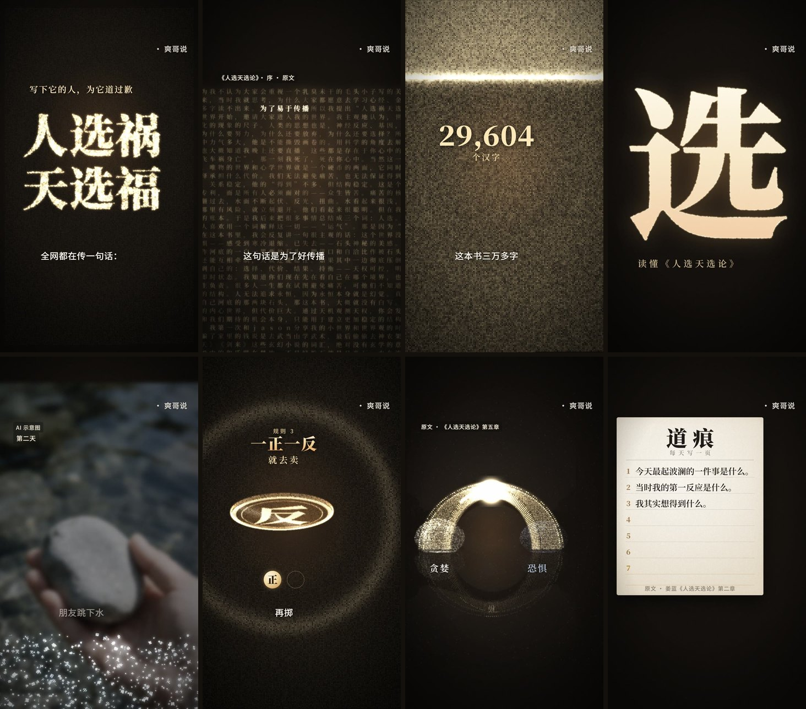

《选》是怎么做出来的
一条 8 分 05 秒的抖音竖屏视频，用 AI 把姜蓝的《人选天选论》从头讲了一遍。这里是它的制作过程和用到的工具。

写在前面
方向由抖音号「爽哥说」来定，具体制作几乎全部由 AI 完成：读书、写稿、配音、画面和音效，都是 AI 写代码做出来的。
第一版从开工到成片用了 1 小时 41 分钟（2026 年 10 月 13 日 23:45 到 10 月 14 日 01:26）。第二版画面没动，只换了配乐和一个音效。
核心创意：整本书就是素材
画面里几乎所有东西，都是这本书自己的字拼出来的。全书 34,952 个字符（其中汉字 29,604 个），每一个都是一粒会发光、会飞的粒子。镜头推近时，每一粒都是书里真实的字，读得出来。
- 开场：「人选祸 天选福」由全书的字拼成，炸开后铺成整本书的一页（140 列 × 250 行，正好一屏）。镜头扎进序言，那句道歉在书里亮起来，最后所有字飞成一个巨大的「选」。
- 原文句：旁白里有 31 句是书里的原话。画面会在整本书里找到这句话并把它点亮，配上「原文 · 第二章」这样的小标签，让观众看到它确实在书里。
- 照片和物件：溪水、石头、硬币、拱桥、马蜂，都由书里的字聚拢而成。拉远看是一张照片，推近看是一个个字。
- 结尾：又回到一个「选」字，也就是封面。
这样做有两个原因。一是好看：普通剪辑软件做不出这种画面。二是诚实：视频是用这本书本身的字把它讲出来的。
旁白的第一人称也是 AI：「我是一个 AI。这本书三万多字，我从头到尾读完了。」
制作流程
一共八步。前六步由一个「导演」 AI 做，第七步交给 14 个 AI 同时做，最后一步再由导演总装。
- 读书和查资料：从 PDF 里抽出全书文字，序加七章。顺手修正抽字错误，比如「口」被抽成了「又」。人物经历另外参考了两篇媒体报道（2023 年 8 月扬子晚报紫牛新闻、2025 年 11 月广州花城）。
- 写稿：旁白共 82 句、2,058 字，分九段：冷开场、他是谁、三个词、一条河、蓝光、硬币和小石头、天权、每天捞一块石头、苍蝇还是马蜂。每句都标了出处：原文 31 句，改写 38 句，其余是媒体报道、网传说法和 AI 串场。
- 配音：用豆包语音 2.0 的「高冷沉稳」男声逐句合成，风格提示是「像纪录片旁白」。合成时同时拿到每个字的时间，画面就能跟着字走。
- 卡节拍：把 82 句排到每分钟 80 拍的网格上，句子从拍点上开始，全片定长 8 分 05 秒。再按内容切成 14 个场景。
- 生成底图：19 张写实竖图，包括神农架的溪水、夜里的船厂、熊猫纪念币、晨雾里的石拱桥和逆光的马蜂。表现真实事件的图，角上都标了「AI 示意图」。
- 搭引擎、定规矩：导演 AI 写好字粒子引擎和第一场（冷开场），给其他 AI 当样板。另写一份「制作圣经」，规定色调（暖黑底加金色字，不吓人）、竖屏安全区、字号，还有一条硬规定：每个原文句都要让观众看到出处。
- 14 个 AI 同时开工：剩下的 13 个场景各交给一个 AI，另有一个 AI 负责配乐和音效。每个 AI 只改自己的文件，自己渲联系表自查，做完把预览发到飞书。一个场景用了 18 到 37 分钟。
- 总装、质检、输出：把 14 个场景接起来，先渲一遍半分辨率，逐帧查坏帧、黑帧、卡帧和 13 处场景衔接。然后渲 1080p 正式版，响度调到 −12 LUFS，输出 24 Mbps 的抖音上传版和封面。
时间线
第一版一共用了 1 小时 41 分钟，其中 14 个 AI 同时干活的那段大约 40 分钟。
| 时间 | 进度 |
|---|---|
| 10-13 23:45 | 「爽哥说」提出想法：做一条 8 分钟左右的视频把这本书讲清楚，封面只要一个「选」字 |
| 10-14 00:07 | 旁白稿定稿，82 句 |
| 00:10 | 19 张底图生成完 |
| 00:17 | 配音完成，节拍卡好 |
| 00:25 | 制作圣经写好 |
| 约 00:30 | 13 个场景 AI 和 1 个配乐 AI 同时开工 |
| 01:09 | 场景全部交齐，半分辨率全片检查通过 |
| 01:12 | 开始渲染 1080p 正式版 |
| 01:26 | 第一版交付 |
| 09:50 | 第二版交付：换配乐，换掉一个太吵的音效 |
人和 AI 怎么分工
人负责定方向和提意见，其余的事 AI 都做了。
「爽哥说」说的几句话
- 做这本书，要「特别震撼」，同时「非常易懂、精致」，封面只有一个「选」字。
- 「正向介绍」。
- 看完第一版：「整体还可以，有个总出现的音效太吵了，换个合理的。bgm 换成《写作就是思考本身》那个。」
- 提供第二版的配乐「科普悬疑」。
AI 做的事
- 导演：一个 Claude Code 会话（Anthropic 的 Claude Opus 5.5）。读书、写稿、配音、做引擎和冷开场，给每个场景写任务书，最后总装、质检、渲染、上传。
- 14 个子 AI：13 个各做一个场景，1 个做配乐和音效。各自读制作圣经和任务书，自己想画面、写代码、渲预览自查，然后交稿。
片子里的画面创意，比如硬币划痕露出银色、字河冻成镜湖、拱桥由第五章的原文搭成，都是这些子 AI 自己想的。
工具清单
真正要付钱的只有三样：Claude 订阅、豆包配音和 Seedream 生图，其余都是免费开源软件或 CC0 素材。
| 环节 | 工具 | 做什么 | 费用 |
|---|---|---|---|
| 导演和写代码 | Claude Code + Claude Opus 5.5（Anthropic） | 读书、写稿、写全部代码，指挥 14 个子 AI | Claude Max 订阅；第一版用了一周额度的约 3.5% |
| 配音 | 豆包语音合成 2.0「高冷沉稳」（火山引擎） | 82 句旁白，带逐字时间 | 按字数计费，全片 2,058 字 |
| 底图 | Seedream 5.0 Pro（火山方舟） | 19 张 1080×1920 写实图 | 约 ¥0.2 一张 |
| 画面 | Remotion 4.0（用 React 写视频）、three.js 0.186（用显卡画 34,952 个字） | 全部画面和渲染 | 个人使用免费 |
| 字体 | 思源宋体（Noto Serif SC）、思源黑体 | 书页、标题和字幕 | 免费（SIL OFL） |
| 读 PDF 和做字形 | Python | 抽出全书文字，把用到的 1,530 个不同的字符画成一张字形图供显卡使用 | 免费 |
| 配乐 | 第一版：用 Python 代码现写的配乐。第二版：「科普悬疑」，由代码按小节剪接，再加上锣、大鼓和颤音琴 | 卡点、重拍、人声下自动压低 | 乐器采样来自 VCSL，CC0 |
| 音效 | Python 合成 + CC0 采样（Freesound、Kenney、VCSL） | 翻页、硬币、水声、字聚拢的纸声等 | 免费 |
| 混音和输出 | FFmpeg | 响度 −12 LUFS、限幅、封装上传版 | 免费 |
| 质检 | Python 脚本 | 逐帧查坏帧、黑帧、卡帧，统计音效响度 | 免费 |
| 交付 | 飞书机器人、阿里云盘命令行 | 发预览，传 1.4 GB 的成片 | 免费 |
电脑是一台 Windows 台式机，显卡 RTX 4080 SUPER（16 GB）。渲染 8 分钟 1080p 大约要 15 分钟。
修改记录
第二版画面一帧没动，只重做了声音，重新出片约 3 分钟。
| 改动 | 第一版 | 第二版 |
|---|---|---|
| 太吵的音效 | 字聚拢时的「闪光」声：高音玻璃粒叮叮响，全片 34 次，只比人声低 6.5 LU | 纸张「聚拢」声：纸张飘落声倒放，最后轻轻落定。三个变体轮流用，轻约 9 dB |
| 提示音 | 钟琴「叮」 | 颤音琴，低 3 dB，和新配乐同调 |
| 配乐 | 用代码现写的 D 大调五声配乐 | 「科普悬疑」，不变速不变调，按小节剪成三段 |
| 重拍 | 写在旧配乐里 | 用锣、大鼓、颤音琴重新补上，力度和第一版接近 |
新配乐是按剧情剪的，几个关键点都落在拍上：
- 片名「选」之后鼓进来。「人选。祸。天选。」三个词正好落在三个小节头上。
- 「蓝光，也没有回来」处音乐停下，引文之后再进来。
- 拱桥合拢（5:00）时鼓第二次进来。「只要你还能问，桥就还没断」处主旋律进来。
- 「是一只很大的马蜂」处音乐停下。结尾的「选」落在原曲自己的收尾重拍上。
如果想自己做
全部代码在 GitHub：github.com/bitqs/xuan-film。书的全文、配音和配乐有版权，没有放进去。
- 电脑：一台有独立显卡的电脑。本片用的是 RTX 4080 SUPER，显卡越弱渲得越慢。
- 账号：Claude（用 Claude Code；同时开 14 个 AI 很耗额度，本片用的是 Max 订阅）、火山引擎（豆包配音和 Seedream 生图）。
- 软件：Node.js、Python、FFmpeg，都免费。Remotion 和 three.js 用 npm 装。
- 换一本书：引擎和工具可以直接用。要重做的是稿子、配音和 14 个场景，也就是重新走一遍上面的八步。